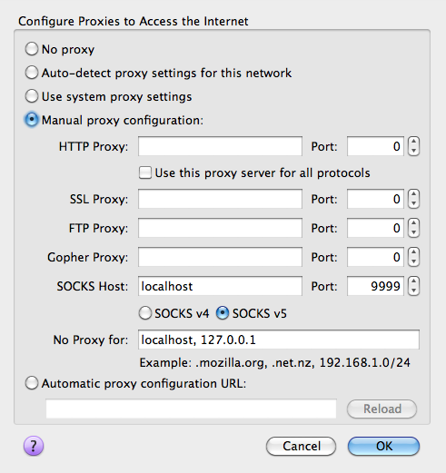

This week I’m heading to LA for the Magento Imagine conference. It should be a really diverse conference, with developers, marketers and all manner of other ecommerce industry experts brought together by a common interest in Magento. I’ll be presenting a short tech talk during the Developer UnConference section, which is billed as a developer only techy session – sounds like fun! I’ll be running through some Magento Engineering tips, for project setup, development and deployment in a repeatable way.
I have a fairly grueling trip to get there and amidst all this insecure wifi in the air at Sydney airport I thought I’d jot down a quick how-to for fellow travelers/conference goers to avoid having their Twitter or Facebook account hacked by a 10 year old with a Mac book.
Follow the recipe below for secure web browsing at airports on the way and while you’re at the Magento Imagine conference.
Ingredients
Here’s what I use, feel free to substitute where you want to.
1 Mac or Linux computer
I’m sure you can do this on Windows, I just don’t care how.
1 server that you can SSH in to
If you do not already have one of these, you can now rent them by the hour for $0.02 per hour (or free on the AWS free tier if you are eligible)
Firefox
You can use other browsers, but my screenshot of the config will be for Firefox.
Method
Ok now there are actually only two steps to this.
Step 1
Connect to the server using SSH with the special -D flag which causes a local port to be opened as a SOCKS proxy. In my example below I use port 9999, but you can put any value you like in there. You run this command in Terminal.app on a Mac or in any old Terminal on Linux, you’ll need your username and the address of the server you are connecting to obviously.
ssh -D 9999 username@123.678.33.22 |
Step 2
Thankfully Firefox has a nice built in ability to connect to SOCKS proxies so all we have to do is tell it to do so. On a Mac go to Firefox -> Preferences -> Advanced -> Network -> Settings
In the dialog that opens select Manual proxy configuration. For SOCKS Host enter localhost and for port enter 9999 (or your chosen port if you used a different one in Step 1). SOCKS v5 will probably be the default, I think both are supported anyway so I doubt it matters.
It should look like this:

Lastly, test it worked, go here and check that your IP now matches the server you SSH’ed into in Step 1. If it does, then your web traffic is being sent across the secure SSH connection, now you can tweet all you like without fear of bored adolescents hijacking your session.
Hope I’ll see some of you at the conference, if you can’t make it I’ll be sure to write up a summary post for you, so stay tuned!
Facebook do offer https recently, but is not turn on by default yet.
http://blog.facebook.com/blog.php?post=486790652130
Thanks for the great tip. I know you don’t care about windows, but in case someone else that is reading this does, I have confirmed that using putty you can do this. Just setup your ssh connection in Putty, then go to the Connections > SSH > Tunnels section and add a Dynmaic port forward. You’ll need to put 9999 (or whatever) in the Source Port field.
@Ken – Thanks, same goes for Twitter, you can enable it if you know where (and know that it is required for safe browsing in public places). Oh and thanks for the free wifi at SYD airport, nice one Tomizone!
@Shaun – Thanks for adding the Windows tip, much appreciated.
There isn’t anything residual to reset on the server after exiting the connection via Terminal right? Just unset the proxy in Firefox.
Looking forward to meeting you in a few days.
@Brendan Falkowski – that’s right, once the SSH connection is closed, it’s closed at both ends. Talk soon!
Just remember to shut down the EC2 instance if you’re renting it by the hour.